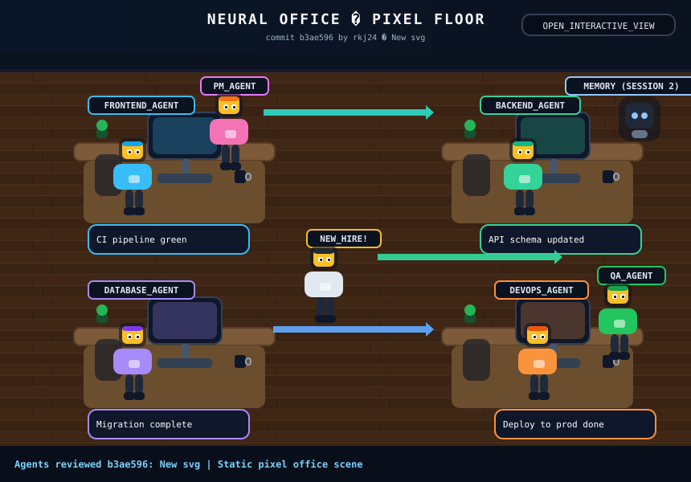

Latest Commit
Neural Office — Commit Conversation
Agents now discuss the latest repository commit automatically. No issue query flow is used. The SVG shows moving agents meeting in the center and returning to their desks.

Conversation Timeline
Loading conversation...
Click any desk hotspot to filter the visible turns by speaker. Full state source: office-state.json.